Vue.js 开发的标准工具
vue-cli脚手架的安装
1 | npm install -g @vue/cli |
创建一个项目
vue create hello-world
项目搭建过程
命令行输入
vue create 文件名
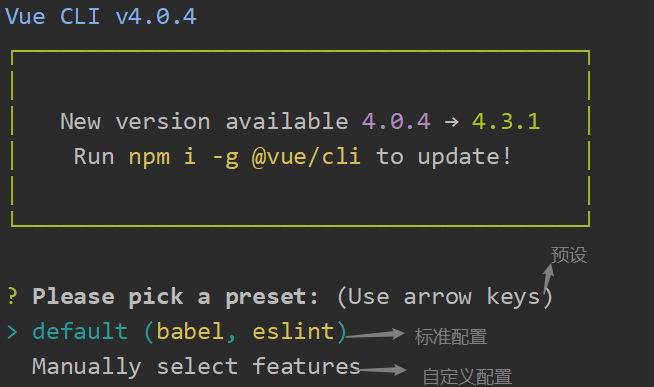Please pick a preset: (Use arrow keys) preset是之前预设过的配置(如果没有选择下面两个选项, 如果有选择直接安装)enter
default (babel, eslint): 默认配置(直接enter)非常适合快速创建一个新的项目的原型, 但是没有带任何辅助功能的npm包
Manually select feature: 手动配置(按下方向键↓调换选项)是我们所需要的面向生产的项目，提供可选择的npm包
vue配置 (方向键↑和↓进行切换，空格键进行确定)
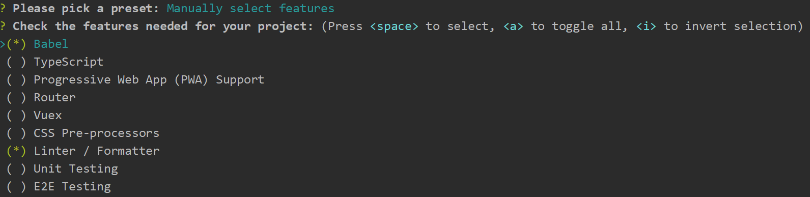1
2
3
4
5
6
7
8
9
10
11? Please pick a preset: Manually select features
? Check the features needed for your project: (Press <space> to select, <a> to toggle all, <i> to invert selection)
>(*) Babel // Babel 是一个 JavaScript 编译器
( ) TypeScript // javaScript的超集
( ) Progressive Web App (PWA) Support // 渐变式web应用程序
( ) Router // vue-router(vue路由)
( ) Vuex // vuex(vue的状态管理模式)
( ) CSS Pre-processors // css 预处理器
(*) Linter / Formatter // 代码风险检测和格式化(如：Eslnt)
( ) Unit Testing // 单元测试
( ) E2E Testing // e2e测试Router
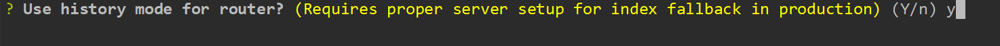- 首先会让你选择是否使用history router: Vue-Router有两种模式分别是hash和history(建议选择no), 这样直接可以使用， 如果想使用可以查看下面的方法尽享配置
- 如果想切换到history模式,在路由中填上如下代码:具体配置
1
2
3
4const router = new VueRouter({
mode: 'history',
routes: [...]
})
CSS Pre-processors(根据自己的需要选择配置)
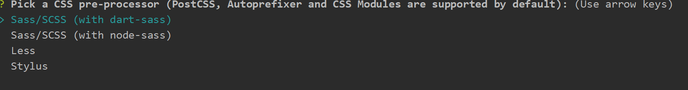- Sass 是一款强化 CSS 的辅助工具，它在 CSS 语法的基础上增加了变量 (variables)、嵌套 (nested rules)、混合 (mixins)、导入 (inline imports) 等高级功能，这些拓展令 CSS 更加强大与优雅。使用 Sass 以及 Sass 的样式库（如 Compass）有助于更好地组织管理样式文件，以及更高效地开发项目
- Less （Leaner Style Sheets 的缩写） 是一门向后兼容的 CSS 扩展语言。包含了 Less 语言以及利用 JavaScript 开发的用于将 Less 样式转换成 CSS 样式的 Less.js 工具。
- Stylus - 富有表现力的、动态的、健壮的CSS
Linter / Formatter(如下是代码检测错误的不同版本, 根据自己的需要选择配置)
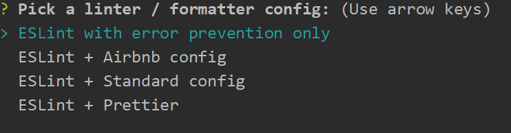- ESLint with error prevention only(仅仅给你报语法上的错误，不给你代码进行规范)
- ESLint + Airbnb config(这三个选项不仅有语法错误上的提示，而且有自己不同的代码规范原则，想进行具体了解，自行看官方文档)
ESLint + Standard config
ESLint + Prettier
把babel,postcss,eslint这些配置文件放哪：(建议选择In dedicated config files，这样不会时package.json太过杂乱)
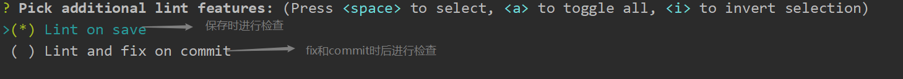1
2
3? Where do you prefer placing config for Babel, PostCSS, ESLint, etc.? (Use arrow keys)
> In dedicated config files // 单独放在一个文件
In package.json // 放在package.json是否保存配置：
1
2
3Save this as a preset for future projects? (Y/n) // 是否记录一下以便下次继续使用这套配置
// 选保存之后，会让你写一个配置的名字：
Save preset as: name // 然后你下次进入配置可以直接使用你这次的配置了
通过vue ui进行项目构建
- 在命令行执行如下代码：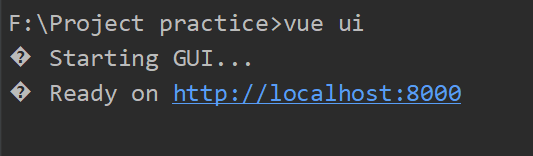
1
vue ui
- 浏览器弹出如图弹框
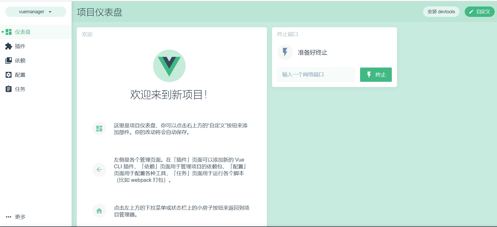 - 打开项目管理器 -> 创建 -> 在此创建新项目
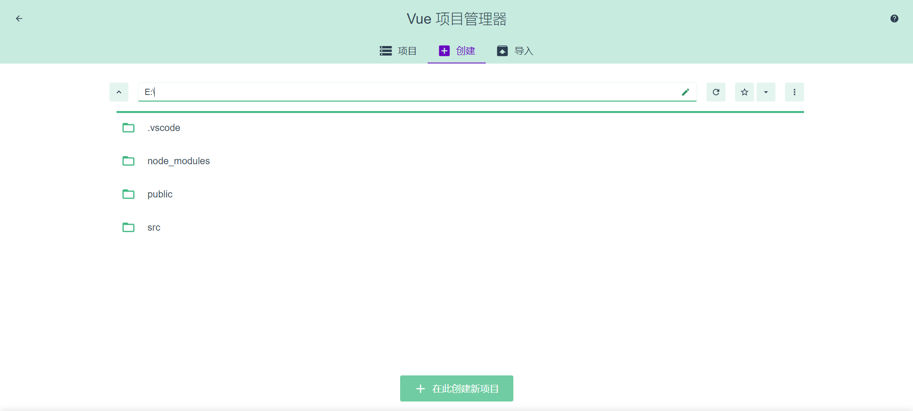 - 在详情中创建项目名 -> 下一步
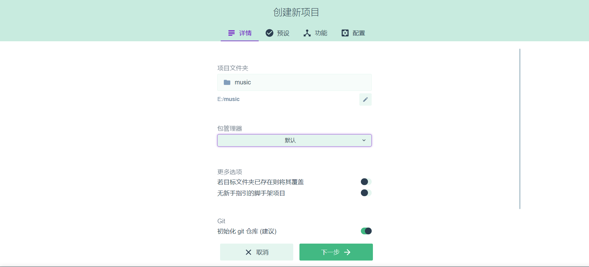 - 预设中选择手动 -> 下一步
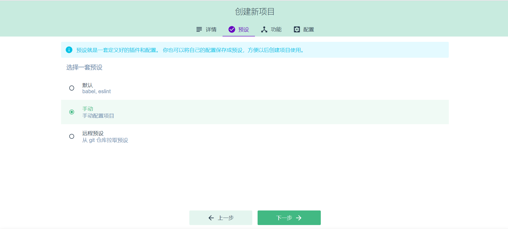 - 在功能中选自自己需要的配置 -> 下一步
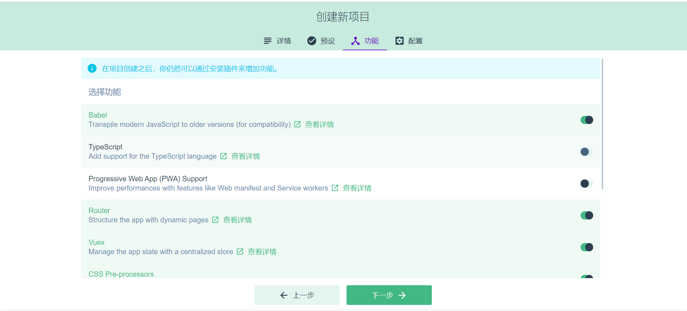 - 在配置中选择自己需要的配置 -> 创建项目
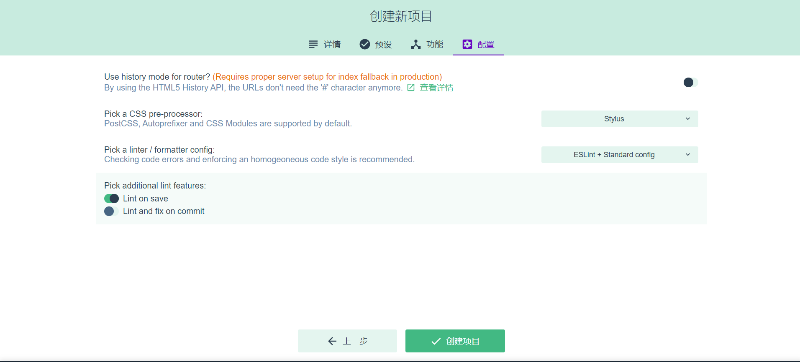 - 保存预设名(我选择了不保存)
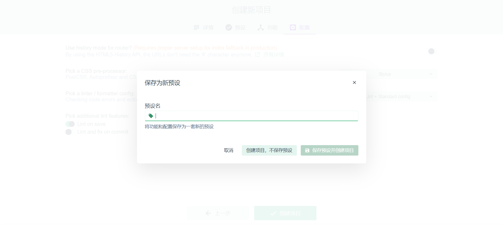